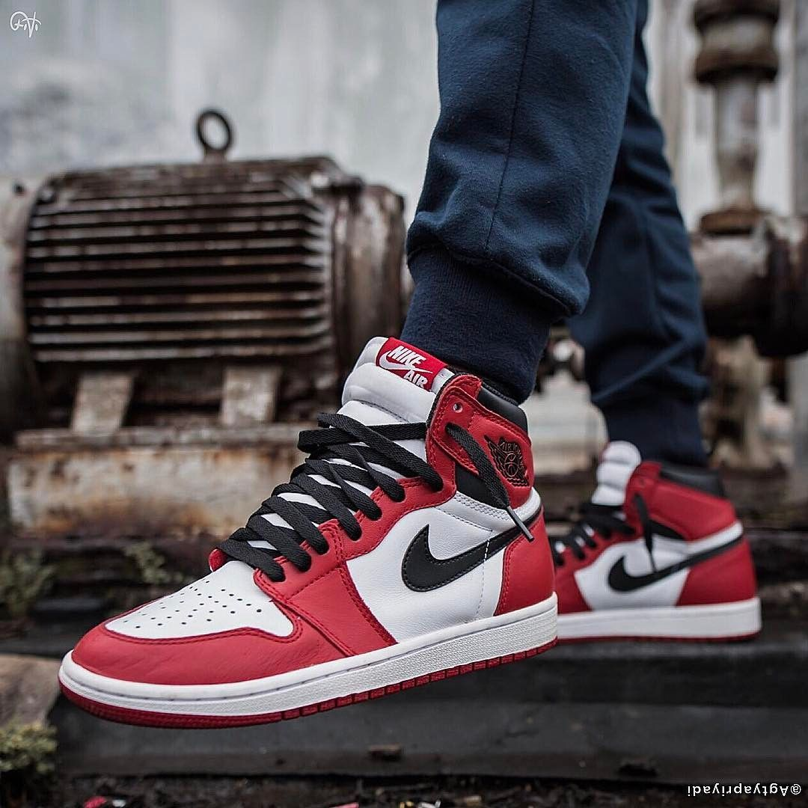
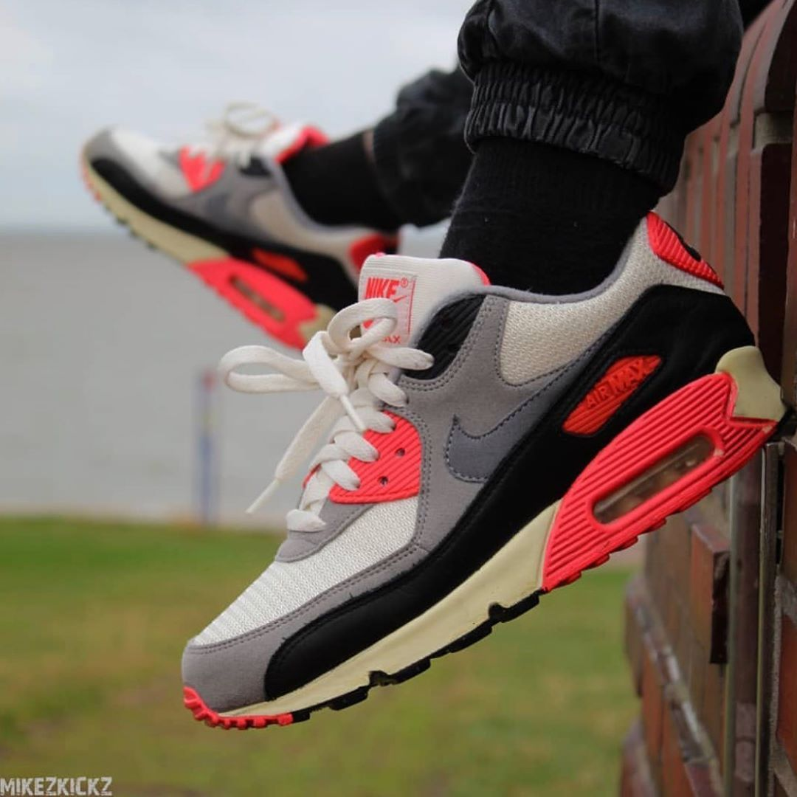

DE SNEAKERHEADS PARA SNEAKERHEADS
Conheça um pouco da história dos tênis mais famosos da Nike.

Air Jordan 1
Lançado em 1985, o Air Jordan 1 bateu recorde de vendas, desencadeou um fenômeno cultural e ainda revolucionou o marketing esportivo.

Air Max 90
Criado por Tinker Hatfield, em 1987, foi o primeiro tênis a ter uma câmara de ar visível na sola.
Air Force 1
Criado nos anos 80 especificamente para o basquete, esse tênis acabou virando o queridinho dos rappers dos anos 90 e atualmennte é um casual que não pode faltar no guarda roupa de ninguém.